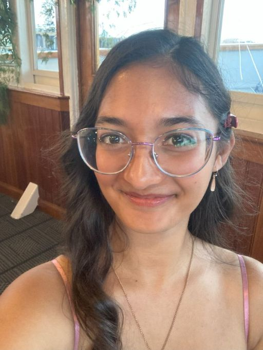

Jessica Arisetty
jarisetty@gmail.com. / LinkedIn
Aspiring professional writer with an interest in literature and social justice. Skilled in technical writing, editing, and communication. Excellent written and verbal communication skills with a strong attention to detail and an ability to analyze needs, problem solve, and achieve goals effectively.
Education
University of Massachusetts - Amherst, Amherst MA
August 2022 - May 2026
English BA, Psychology Minor
College of Humanity & Fine Arts
GPA: 3.98/4.00; Dean's List
Professional Writing and Technical Communication Certification
Software Experience
Adobe Illustrator, Photoshop, Acrobat; Google Suite; Microsoft Office; Microsoft Paint; Madcap Flare; VS Code; HTML/CSS; Praat; Zoom; Audacity
Relevant Coursework
- Composed a 25-page Faux Grant Proposal written to Maddie's Fund on behalf of the Kitty Cat Café
- Wrote a 13-page research paper on Edgar Allen Poe's gothic works
- Designed a 25-page manual on Microsoft Word for notetaking
- Created a professional portfolio website using HTML and CSS
- Produced a website on online accessibility using Madcap Flare
- Designed personal web logo
Relevant Courses
Intro to Professional Writing
Examined an of commonly encountered professional genres, wrote a feasibility study, presented on a scientific and technical issue, produced a grant proposal
Junior Year English Studies
Read colonial and postcolonial texts, wrote an 8-page research paper
Intro To Creative Writing
Drew on a reading list of essays, fiction, and poetry to compose a body of work comprising of short- and long-form fiction and poetry; produced a 15-page portfolio
Creative Writing
Examined postmodernist and surrealist writers, participated in weekly workshops, produced minimum 15 poems and a 10-page portfolio
Advanced Software for Professional Writers
Studied web design, created a Github repository and professional web portfolio and sitemap
Professional Writing and Technical Communications I
Simulated writing and editing as used in online and computer industries, developed a 25 page documentation manual
Advanced Technical Writing I
Learned and applied principles of technology writing, web design, and online accessibility.
Advanced Technical Writing II
Studied in depth issues related to technology and culture, workshopped portfolios and professional skills.
Work Experience
Assistant Director
Steve and Kate's Camp at Bright Horizons, Summer 2025, Newton MA
Camp Counselor
Branches at Meadowbrook, Summers 2023 - 2024, Weston MA
Peer Notetaker
Disability Services, Fall 2023 and 2025, University of Massachusetts - Amherst
Sales Associate
Kohl's, Summer 2022, Burlington MA
Skills
- Conflict resolution
- Administrative organization
- Behavior management
Interests
Literature, painting, scrpabooking